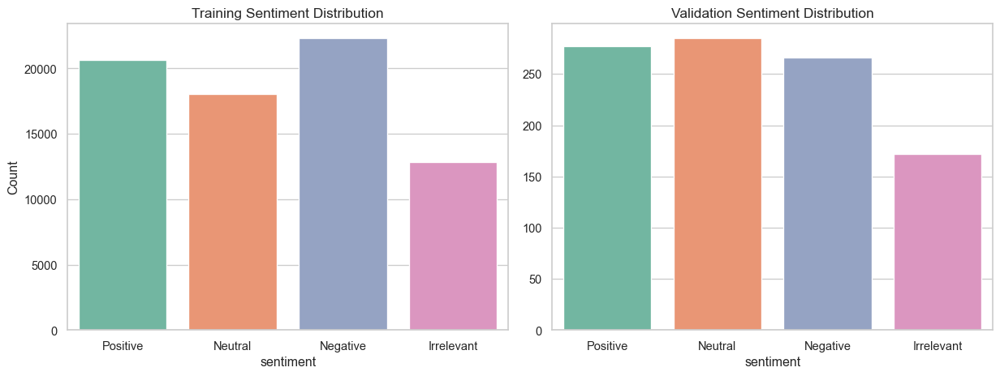

This project uses the Twitter Entity Sentiment Analysis dataset, composed of:
twitter_training.csv: Main training dataset
twitter_validation.csv: Validation dataset
Each row contains: - id: unique identifier
- entity: the target subject
- sentiment: one of Positive, Neutral, Negative, or Irrelevant
- tweet: the tweet content
🎯 Task: Predict the sentiment expressed toward the entity.
/var/folders/6f/4d64zbqj5816vg7gt9y_mmwr0000gn/T/ipykernel_46852/4238378009.py:9: FutureWarning:
Passing `palette` without assigning `hue` is deprecated and will be removed in v0.14.0. Assign the `x` variable to `hue` and set `legend=False` for the same effect.
sns.countplot(data=train, x="sentiment",
/var/folders/6f/4d64zbqj5816vg7gt9y_mmwr0000gn/T/ipykernel_46852/4238378009.py:9: UserWarning: The palette list has more values (8) than needed (4), which may not be intended.
sns.countplot(data=train, x="sentiment",
/var/folders/6f/4d64zbqj5816vg7gt9y_mmwr0000gn/T/ipykernel_46852/4238378009.py:15: FutureWarning:
Passing `palette` without assigning `hue` is deprecated and will be removed in v0.14.0. Assign the `x` variable to `hue` and set `legend=False` for the same effect.
sns.countplot(data=valid, x="sentiment",
/var/folders/6f/4d64zbqj5816vg7gt9y_mmwr0000gn/T/ipykernel_46852/4238378009.py:15: UserWarning: The palette list has more values (8) than needed (4), which may not be intended.
sns.countplot(data=valid, x="sentiment",

2.9 ✅ Summary
The training set has ~74,000 records; validation has ~1,000
686 empty tweets were removed from training
Neutral is the most common label — indicating an imbalanced distribution